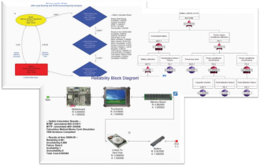

Question
Reliability block diagrams (RBD), fault trees, and Markov diagrams are all used to model system behavior. When selecting a modeling tool, how do I know which to use?
The Short Answer
Most reliability problems involve some kind of randomness. A system that has a random nature follows a stochastic process. Both RBDs and fault trees are high-level modeling tools that graphically represent the system success/failure logic of a system subject to a stochastic process. The graphical nature of these tools allows system failure and repair behaviors to be specified easily. Therefore, whenever possible, it is recommended that these high-level tools be used. When complex dependencies exist among various parts of the system, using a low-level Markov tool may be necessary. While specifying system behavior in a Markov tool is time-consuming and skill-intensive, the power and flexibility it offers is unsurpassed.
The Details
Reliability engineering deals with the failure and repair behaviors of systems and their components. In general, failure and repair times involve randomness. Therefore, predicting exact failure and repair times in advance is impossible. However, the random nature of these times can be represented using statistical distributions. Thus, failure and repair behaviors follow stochastic processes. Such systems are known as stochastic systems.
A Markov process is a special kind of stochastic process. In a Markov process, the future behavior of the system depends on only the current state of the system. The history of prior events is irrelevant. Systems that follow a Markov process are known as Markovian systems. A Markov chain is a special type of Markov process where the system has discrete state-space. RBDs, fault trees, and Markov chains are all used to represent Markovian systems.
Reliability engineering deals with two kinds of problems associated with stochastic processes:
- Finding the stochastic behavior of individual components. The goal here is to determine underlying failure and repair distributions and their parameters. Reliability prediction and failure data (Weibull) analysis are used for this purpose.
- Determining the reliability (failure/repair) characteristics of the system using the reliability characteristics of the components and the given system failure logic. Fault trees, RBDs, and Markov chains are used for this purpose.
High Level Tools
In high-level modeling tools, system success/failure logic can be specified graphically as a combination of component or event successes/failures. RBDs and fault trees are considered high-level tools because they provide easy system behavior specification and accurate results. In general, RBDs represent system success logic, and fault trees represent system failure logic. The behavior of each component or event is specified independently.
Introduced during World War II, RBDs made it easy to specify and understand system success in terms of component successes. By the 1960s, highly developed RBDs were being used extensively to attain safety and reliability goals. However, causes for system failure are not always a result of component failure.
In 1961, W. A. Watson of Bell Telephone Laboratories developed a plan to evaluate the safety of the Minuteman Launch Control System. This plan was the forerunner of what is now known as Fault Tree analysis. It is used to model system failures caused by component failures and/or external events, environmental influences, human errors, and operational and maintenance errors. Today, highly developed fault trees are used to model systems that can fail in several modes and may experience several kinds of unsafe situations. They are also used to model operational systems that experience unsafe situations.
In most cases, a fault tree can be converted to an RBD, and an RBD can be converted to a fault tree. If, however, a fault tree contains events other than component failures, converting it to an RBD is generally illogical. If a fault tree contains common cause failures or disjoint events, converting it to an RBD is likely to be infeasible.
Low Level Tools
In low-level modeling tools, all system behaviors are explicitly specified by the analyst. Markov chains were proposed in the early 1900s by Andrei A. Markov, whose work launched the theory of stochastic processes. State transition diagrams provide a low-level method for specifying Markov chains. In 1923, Norbert Wiener proposed a continuous Markov process. During the 1930s, Andrei Kolmogorov provided the foundation of the general theory.
The benefits of low-level Markov tools include power and flexibility. When complex dependencies exist among various parts of the system, failure and repair behaviors may only be able to be represented using a Markov tool. For example, it may be necessary to use a Markov tool to model combinations of the following scenarios:
- Standby failures
- Non-standard common cause failures
- Induced failures and shared load systems
- Imperfect fault coverage and switchover mechanisms
- Priorities in repairs
- Limited repair resources
- Failure sequence-dependent consequences.
Although very powerful and flexible, Markov tools require advanced modeling skills to use. For large systems, the system specification process is time-consuming and prone to human error. Therefore, if a system can be represented using a high-level modeling tool, its use is generally recommended.
High-Level Tools are Evolutionary
High-level tools have been enhanced over time so that they can model common scenarios that occur in reliability engineering. For example, the recent introduction of dynamics gates to fault trees allows them to model several sequence dependent behaviors. Similarly, the addition of SPARE gates provide for modeling cold or warm standby components. Such enhancements to fault trees have made the use of Markov tools unnecessary for these situations. Similarly, the addition of switch failures, standby blocks, and junctions to RBDs allows them to model situations that could once be handled only by Markov tools.
The enhancement of high-level modeling tools continues to be an evolutionary process. As the need to model a particular scenario becomes more common, additional capabilities are often incorporated. For example, Windchill RBD (formerly Relex RBD) supports common spares pools, load sharing, imperfect maintenances, and limited repair resources. However, including capabilities for modeling all types of scenarios in a high-level modeling tool will never be possible because the tool would become too complex, causing solution quality to decrease. Thus, the need for low-level Markov tools will remain.
Tool Selection Tips
Listed below are tips for selecting the right modeling tools for different reliability problems.
- If all components are in series and failure and repair distributions are exponential, then use system-level calculations from a reliability prediction tool.
- If all components are independent, then use RBDs, regardless of the failure and repair distributions.
- If abnormal events in the system can be caused by various non-component failure events and the kind of dependencies in the system can be supported with the features available in your fault tree tool (disjoint events, common cause failures, dynamic gates, etc.), then use fault trees.
- If failure and repair distributions are exponential (may vary with the system state) and several dependencies exist among the components, then use Markov diagrams.
- If several combinations of the above conditions exist, then use a combination of tools.
Conclusion
High-level modeling tools avoid the explicit system specification required by low-level Markov tools. However, it is impossible to find a high-level tool that conveniently represents all kinds of stochastic processes. To choose the right modeling tool, you need to be aware of the tool's current features and limitations. For some reliability problems, it may be beneficial to use RBDs for various portions, and fault trees and Markov diagrams for other portions. In such cases, the use of diagram linking to create hybrid models is highly desirable.
Additional information about Windchill RBD, Windchill FTA and Windchill Markov can be found at www.crimsonquality.com/products.